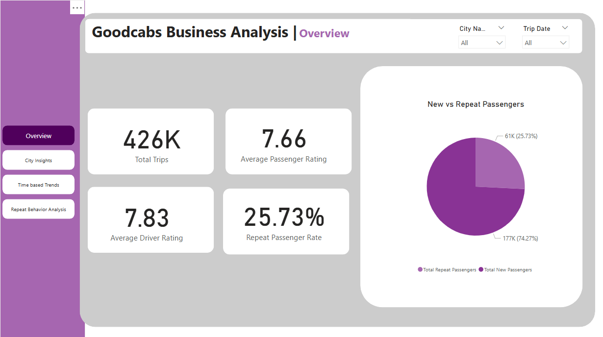

Goodcabs Business Analysis
Power BI dashboards to uncover operational insights and passenger behavior patterns

Overview Dashboard - Key KPIs and Ratings
Project Overview
- Objective: Deliver actionable insights to the Chief of Operations on trip performance, passenger satisfaction, and repeat behavior.
- Tools Used: Power BI, Power Query, DAX
Problem Statement
Goodcabs, a cab service company operating in ten tier-2 Indian cities, aimed to track performance and growth targets for 2024. With the analytics lead unavailable, I was tasked with producing a complete operational report to assist executive-level decision-making through an intuitive dashboard experience.
Dashboards & Visualizations
Dashboard 1: Overview
High-level KPIs and summary insights
- Total Trips, Average Driver & Passenger Ratings
- Repeat Passenger Rate vs. New Passengers
Dashboard 2: City Insights
Performance breakdown across cities
- Top 5 and Bottom 5 Cities by Trip Volume
- Fare vs Distance Efficiency by City
- Target Achievement Analysis
Dashboard 3: Time-Based Trends
- Monthly Trip Volume Trends
- Weekday vs Weekend Analysis
- Peak and Low Demand Months per City
Dashboard 4: Repeat Behavior Analysis
- Repeat Trip Frequency Distribution
- City-wise Repeat Passenger Count
- Monthly Repeat Passenger Rate Trend
Key Insights
- Jaipur and Lucknow led in both trip volume and repeat passenger count.
- Weekend trips consistently outnumber weekday trips — suggesting leisure usage.
- Kochi maintained a strong fare-to-distance efficiency.
- Repeat passenger rate showed a steady upward trend over the months — indicating improving loyalty.